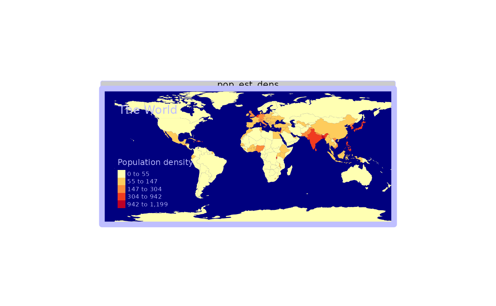
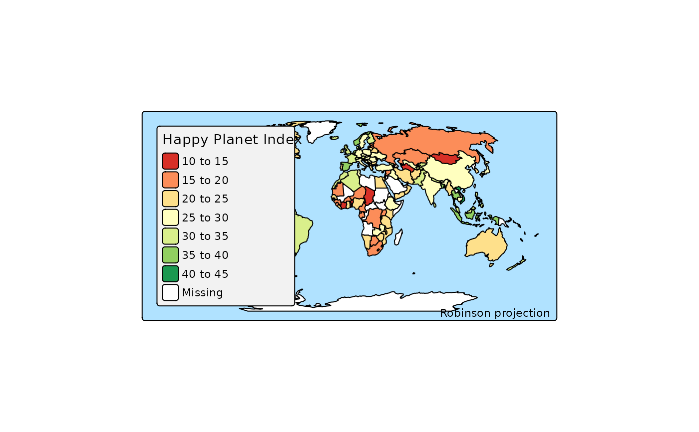

Set of tmap options that are directly related to the layout.
Usage
tm_style(style, ...)
tm_format(format, ...)
tm_layout(
modes,
crs,
facet.max,
facet.flip,
raster.max.cells,
show.messages,
show.warnings,
output.format,
output.size,
output.dpi,
output.dpi.animation,
value.const,
value.na,
value.null,
value.blank,
values.var,
values.range,
value.neutral,
scales.var,
scale.misc.args,
label.format,
label.na,
scale,
asp,
bg.color,
outer.bg.color,
frame,
frame.lwd,
frame.r,
frame.double.line,
outer.margins,
inner.margins,
inner.margins.extra,
meta.margins,
meta.auto.margins,
between.margin,
component.offset,
component.stack.margin,
grid.mark.height,
xylab.height,
coords.height,
xlab.show,
xlab.text,
xlab.size,
xlab.color,
xlab.rotation,
xlab.space,
xlab.fontface,
xlab.fontfamily,
xlab.side,
ylab.show,
ylab.text,
ylab.size,
ylab.color,
ylab.rotation,
ylab.space,
ylab.fontface,
ylab.fontfamily,
ylab.side,
panel.type,
panel.wrap.pos,
panel.xtab.pos,
unit,
color.sepia.intensity,
color.saturation,
color.vision.deficiency.sim,
text.fontface,
text.fontfamily,
legend.show,
legend.design,
legend.orientation,
legend.position,
legend.width,
legend.height,
legend.stack,
legend.group.frame,
legend.resize.as.group,
legend.reverse,
legend.na.show,
legend.title.color,
legend.title.size,
legend.title.fontface,
legend.title.fontfamily,
legend.xlab.color,
legend.xlab.size,
legend.xlab.fontface,
legend.xlab.fontfamily,
legend.ylab.color,
legend.ylab.size,
legend.ylab.fontface,
legend.ylab.fontfamily,
legend.text.color,
legend.text.size,
legend.text.fontface,
legend.text.fontfamily,
legend.frame,
legend.frame.lwd,
legend.frame.r,
legend.bg.color,
legend.bg.alpha,
legend.settings.standard.portrait,
legend.settings.standard.landscape,
title.show,
title.size,
title.color,
title.fontface,
title.fontfamily,
title.bg.color,
title.bg.alpha,
title.padding,
title.frame,
title.frame.lwd,
title.frame.r,
title.stack,
title.position,
title.group.frame,
title.resize.as.group,
credits.show,
credits.size,
credits.color,
credits.fontface,
credits.fontfamily,
credits.bg.color,
credits.bg.alpha,
credits.padding,
credits.frame,
credits.frame.lwd,
credits.frame.r,
credits.stack,
credits.position,
credits.width,
credits.heigth,
credits.group.frame,
credits.resize.as.group,
compass.north,
compass.type,
compass.text.size,
compass.size,
compass.show.labels,
compass.cardinal.directions,
compass.text.color,
compass.color.dark,
compass.color.light,
compass.lwd,
compass.bg.color,
compass.bg.alpha,
compass.margins,
compass.show,
compass.stack,
compass.position,
compass.frame,
compass.frame.lwd,
compass.frame.r,
compass.group.frame,
compass.resize.as.group,
scalebar.show,
scalebar.breaks,
scalebar.width,
scalebar.text.size,
scalebar.text.color,
scalebar.color.dark,
scalebar.color.light,
scalebar.lwd,
scalebar.position,
scalebar.bg.color,
scalebar.bg.alpha,
scalebar.size,
scalebar.margins,
scalebar.stack,
scalebar.frame,
scalebar.frame.lwd,
scalebar.frame.r,
scalebar.group.frame,
scalebar.resize.as.group,
grid.show,
grid.labels.pos,
grid.x,
grid.y,
grid.n.x,
grid.n.y,
grid.crs,
grid.col,
grid.lwd,
grid.alpha,
grid.labels.show,
grid.labels.size,
grid.labels.col,
grid.labels.rot,
grid.labels.format,
grid.labels.cardinal,
grid.labels.margin.x,
grid.labels.margin.y,
grid.labels.space.x,
grid.labels.space.y,
grid.labels.inside.frame,
grid.ticks,
grid.lines,
grid.ndiscr,
mouse_coordinates.stack,
mouse_coordinates.position,
mouse_coordinates.show,
panel.show,
panel.labels,
panel.label.size,
panel.label.color,
panel.label.fontface,
panel.label.fontfamily,
panel.label.bg.color,
panel.label.height,
panel.label.rot,
qtm.scalebar,
qtm.minimap,
qtm.mouse.coordinates,
earth.boundary,
earth.boundary.color,
earth.boundary.lwd,
earth.datum,
space.color,
attr.color,
max.categories,
legend.hist.bg.color,
legend.hist.bg.alpha,
legend.hist.size,
legend.hist.height,
legend.hist.width,
attr.outside,
attr.outside.position,
attr.outside.size,
attr.position,
attr.just,
basemap.server,
basemap.alpha,
basemap.zoom,
overlays,
overlays.alpha,
alpha,
colorNA,
symbol.size.fixed,
dot.size.fixed,
text.size.variable,
bbox,
check.and.fix,
set.bounds,
set.view,
set.zoom.limits,
name,
basemap.show,
title = NULL,
main.title = NULL,
...
)Arguments
- style
name of the style
- ...
used to catch other deprecated arguments
- format
name of the format
- modes, crs, facet.max, facet.flip, raster.max.cells, show.messages, show.warnings, output.format, output.size, output.dpi, output.dpi.animation, value.const, value.na, value.null, value.blank, values.var, values.range, value.neutral, scales.var, scale.misc.args
See
tmap_options()- label.format, label.na, scale, asp, bg.color, outer.bg.color, frame, frame.lwd, frame.r, frame.double.line, outer.margins, inner.margins, inner.margins.extra, meta.margins, meta.auto.margins, between.margin, component.offset, component.stack.margin
See
tmap_options()- grid.mark.height, xylab.height, coords.height, xlab.show, xlab.text, xlab.size, xlab.color, xlab.rotation, xlab.space, xlab.fontface, xlab.fontfamily, xlab.side, ylab.show, ylab.text, ylab.size, ylab.color, ylab.rotation, ylab.space, ylab.fontface, ylab.fontfamily, ylab.side
See
tmap_options()- panel.type, panel.wrap.pos, panel.xtab.pos, unit, color.sepia.intensity, color.saturation, color.vision.deficiency.sim, text.fontface, text.fontfamily
See
tmap_options()- legend.show, legend.design, legend.orientation, legend.position, legend.width, legend.height, legend.stack, legend.group.frame, legend.resize.as.group, legend.reverse, legend.na.show, legend.title.color, legend.title.size, legend.title.fontface, legend.title.fontfamily, legend.xlab.color, legend.xlab.size, legend.xlab.fontface, legend.xlab.fontfamily, legend.ylab.color, legend.ylab.size, legend.ylab.fontface, legend.ylab.fontfamily, legend.text.color, legend.text.size, legend.text.fontface, legend.text.fontfamily, legend.frame, legend.frame.lwd, legend.frame.r, legend.bg.color, legend.bg.alpha, legend.settings.standard.portrait, legend.settings.standard.landscape
See
tmap_options()- title.show, title.size, title.color, title.fontface, title.fontfamily, title.bg.color, title.bg.alpha, title.padding, title.frame, title.frame.lwd, title.frame.r, title.stack, title.position, title.group.frame, title.resize.as.group
See
tmap_options()- credits.show, credits.size, credits.color, credits.fontface, credits.fontfamily, credits.bg.color, credits.bg.alpha, credits.padding, credits.frame, credits.frame.lwd, credits.frame.r, credits.stack, credits.position, credits.width, credits.heigth, credits.group.frame, credits.resize.as.group
See
tmap_options()- compass.north, compass.type, compass.text.size, compass.size, compass.show.labels, compass.cardinal.directions, compass.text.color, compass.color.dark, compass.color.light, compass.lwd, compass.bg.color, compass.bg.alpha, compass.margins, compass.show, compass.stack, compass.position, compass.frame, compass.frame.lwd, compass.frame.r, compass.group.frame, compass.resize.as.group
See
tmap_options()- scalebar.show, scalebar.breaks, scalebar.width, scalebar.text.size, scalebar.text.color, scalebar.color.dark, scalebar.color.light, scalebar.lwd, scalebar.position, scalebar.bg.color, scalebar.bg.alpha, scalebar.size, scalebar.margins, scalebar.stack, scalebar.frame, scalebar.frame.lwd, scalebar.frame.r, scalebar.group.frame, scalebar.resize.as.group
See
tmap_options()- grid.show, grid.labels.pos, grid.x, grid.y, grid.n.x, grid.n.y, grid.crs, grid.col, grid.lwd, grid.alpha, grid.labels.show, grid.labels.size, grid.labels.col, grid.labels.rot, grid.labels.format, grid.labels.cardinal, grid.labels.margin.x, grid.labels.margin.y, grid.labels.space.x, grid.labels.space.y, grid.labels.inside.frame, grid.ticks, grid.lines, grid.ndiscr
See
tmap_options()- mouse_coordinates.stack, mouse_coordinates.position, mouse_coordinates.show, panel.show, panel.labels, panel.label.size, panel.label.color, panel.label.fontface, panel.label.fontfamily, panel.label.bg.color, panel.label.height, panel.label.rot, qtm.scalebar, qtm.minimap, qtm.mouse.coordinates
See
tmap_options()- earth.boundary, earth.boundary.color, earth.boundary.lwd, earth.datum, space.color, attr.color, max.categories, legend.hist.bg.color, legend.hist.bg.alpha, legend.hist.size, legend.hist.height, legend.hist.width, attr.outside, attr.outside.position, attr.outside.size, attr.position, attr.just, basemap.server, basemap.alpha, basemap.zoom, overlays, overlays.alpha, alpha, colorNA, symbol.size.fixed, dot.size.fixed, text.size.variable, bbox, check.and.fix, set.bounds, set.view, set.zoom.limits, name, basemap.show
See
tmap_options()- title, main.title
deprecated
Examples
data(land, World)
# Error unable to warp stars (argument not yet added to tm_shape)
# On Windows
if (FALSE) {
tm_shape(land, raster.wrap = FALSE) +
tm_raster(
"elevation",
col.scale = tm_scale_intervals(
breaks = c(-Inf, 250, 500, 1000, 1500, 2000, 2500, 3000, 4000, Inf),
values = terrain.colors(9), midpoint = NA
),
col.legend = tm_legend(
title = "Elevation", position = tm_pos_in("left", "bottom"),
frame = TRUE, bg.color = "lightblue"
)
) +
tm_shape(World, is.main = TRUE, crs = "+proj=eck4") +
tm_borders("grey20") +
tm_graticules(labels.size = .5) +
tm_text("name", size = "AREA") +
# tm_compass(position = c(.65, .15), color.light = "grey90") +
# tm_credits("Eckert IV projection", position = c("right", "BOTTOM")) +
tm_style("classic_v3") +
tm_layout(bg.color = "lightblue", inner.margins = c(0, 0, .02, 0))
}
data(land, World)
tm_shape(World) +
tm_fill("pop_est_dens", fill.scale = tm_scale_intervals(style = "kmeans"),
fill.legend = tm_legend(title = "Population density")) +
tm_style("albatross_v3", frame.lwd = 10) +
tm_format("World") +
tm_title("The World", position = tm_pos_in("left", "top"))

################################
# not working yet:
################################
if (FALSE) {
tm_shape(land) +
tm_raster("elevation",
breaks=c(-Inf, 250, 500, 1000, 1500, 2000, 2500, 3000, 4000, Inf),
palette = terrain.colors(9), title="Elevation", midpoint = NA) +
tm_shape(World, is.master=TRUE, projection = "+proj=eck4") +
tm_borders("grey20") +
tm_graticules(labels.size = .5) +
tm_text("name", size="AREA") +
tm_compass(position = c(.65, .15), color.light = "grey90") +
tm_credits("Eckert IV projection", position = c("right", "BOTTOM")) +
tm_style("classic") +
tm_layout(bg.color="lightblue",
inner.margins=c(.04,.03, .02, .01),
earth.boundary = TRUE,
space.color="grey90") +
tm_legend(position = c("left", "bottom"),
frame = TRUE,
bg.color="lightblue")
}
tm_shape(World, projection="+proj=robin") +
tm_polygons("HPI", palette="div", n=7,
title = "Happy Planet Index") +
tm_credits("Robinson projection", position = c("right", "BOTTOM")) +
tm_style("natural", earth.boundary = c(-180, -87, 180, 87), inner.margins = .05) +
tm_legend(position=c("left", "bottom"), bg.color="grey95", frame=TRUE)
#> Warning: The 'projection' argument of 'tm_shape()' is deprecated as of tmap 4.0. Pleaes use 'crs' instead.
#> tm_polygons: Deprecated tmap v3 code detected. Code translated to v4
#> v3 code detected: as of tmap v4, the legend should be specified for each visual variable
#> (e.g. with `fill.legend = tm_legend()` inside tm_polygons to control the legend of fill for polygons.FALSE

# Not working yet
if (FALSE) {
# Example to illustrate the type of titles
tm_shape(World) +
tm_polygons(c("income_grp", "economy"), title = c("Legend Title 1", "Legend Title 2")) +
tm_layout(main.title = "Main Title",
main.title.position = "center",
main.title.color = "blue",
title = c("Title 1", "Title 2"),
title.color = "red",
panel.labels = c("Panel Label 1", "Panel Label 2"),
panel.label.color = "purple",
legend.text.color = "brown")
}
if (FALSE) {
# global option tmap.style demo
# get current style
current.style <- tmap_style()
qtm(World, fill = "economy", format = "World")
tmap_style("col_blind")
qtm(World, fill = "economy", format = "World")
tmap_style("cobalt")
qtm(World, fill = "economy", format = "World")
# set to current style
tmap_style(current.style)
}
# TIP: check out these examples in view mode, enabled with tmap_mode("view")